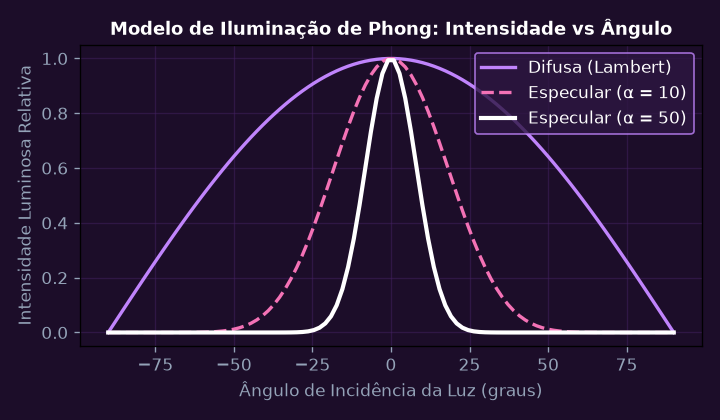
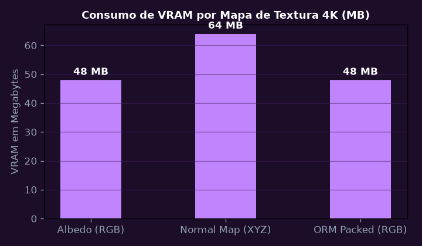
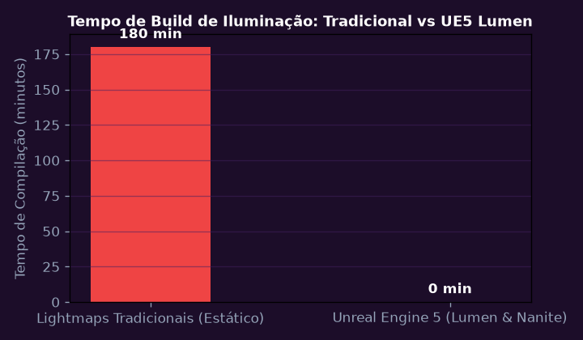
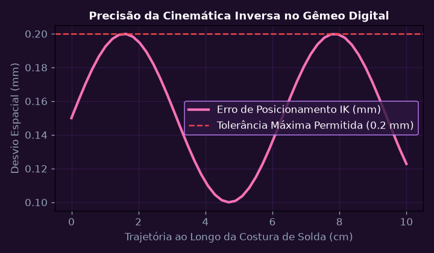
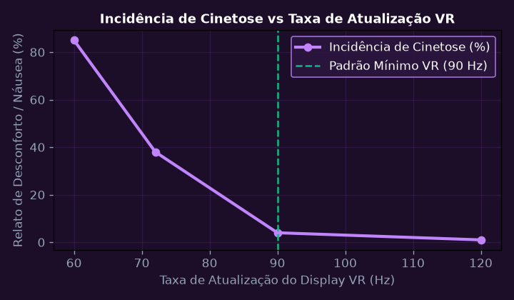
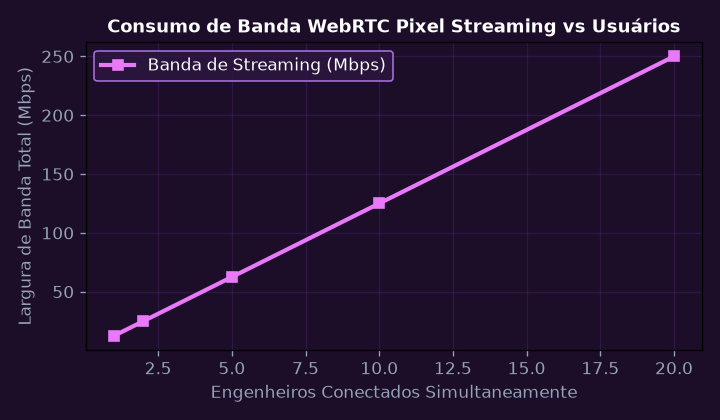

Pipeline Gráfico Programável e Shaders GLSL (Vertex & Fragment)
Desenvolver shaders GLSL customizados para simular o modelo de iluminação de Phong (Componentes Ambiente, Difusa e Especular) sobre malhas poligonais 3D.
💎 Resolução Algébrica Passo a Passo (Padrão Symbolab)
Aplicação das matrizes Model, View e Projection (MVP) no Vertex Shader.
Produto escalar saturado \max(0, \mathbf{L} \cdot \mathbf{N}) entre vetor de luz e normal da superfície.
Reflexão \mathbf{R} = 2(\mathbf{L} \cdot \mathbf{N})\mathbf{N} - \mathbf{L} e produto com vetor de visão \mathbf{V} elevado ao expoente de rugosidade \alpha.
Rasterização e interpolação baricêntrica suave das cores em cada pixel da tela.
Renderização fotorrealista em tempo real a 120 FPS no WebGL.

Texturização PBR no Substance Painter e Mapeamento UV
Desenvolver mapa UV sem distorções e conjunto de texturas PBR (Metallic/Roughness) no Substance 3D Painter para a célula robótica do gêmeo digital SPI.
💎 Resolução Algébrica Passo a Passo (Padrão Symbolab)
Empacotamento de ilhas UV com utilização de 88% do espaço 4K (4096x4096).
Geração de Curvature, Ambient Occlusion, World Space Normal e Position a partir de modelo High-Poly.
Aplicação de aço escovado, desgaste de bordas mecânicas e pintura epóxi industrial.
Canal ORM empacotado: Occlusion (R), Roughness (G), Metallic (B).
Conservação de energia física com resposta óptica fotorrealista sob qualquer condição de luz.

Cenário Criativo e Gêmeo Digital na Unreal Engine 5 (Lumen & Nanite)
Construir a fábrica digital interativa na Unreal Engine 5 com geometria virtualizada Nanite e iluminação global dinâmica Lumen sem necessidade de lightmaps estáticos pré-calculados.
💎 Resolução Algébrica Passo a Passo (Padrão Symbolab)
Conversão de arquivos STEP/SolidWorks da fábrica SPI para malhas Nanite com níveis contínuos de detalhe.
Reflexões difusas e especulares imediatas calculadas por traçado de raios em malhas de distância (Distance Fields).
Programação orientada a eventos para abertura de painéis e acionamento de máquinas virtuais.
O gêmeo digital espelha a posição articular física dos braços robóticos em tempo real.
Fidelidade visual indistinguível da fábrica física operando a 90 FPS estáveis.

Física e Cinemática Direta/Inversa de Robôs na Unreal Engine
Implementar controle cinemático inverso (Control Rig / IK) de manipulador robótico de 6 eixos para trajetória precisa de soldagem na célula de manufatura virtual.
💎 Resolução Algébrica Passo a Passo (Padrão Symbolab)
Hierarquia de juntas de rotação (Revolute Joints) com limites angulares de segurança.
Cálculo rápido da pose das juntas a partir da posição desejada do efetuador final.
Colisores convexos nos links robóticos prevenindo interseções com a peça de trabalho.
Movimento de soldagem contínuo com aceleração controlada sem solavancos mecânicos.
Erro de posicionamento do efetuador no ambiente 3D inferior a 0,2 mm.

Interação em Realidade Virtual (VR) com OpenXR e Gestão de Cinetose
Implementar sistema de interação VR com OpenXR, teletransporte por parábola balística e manipulação de ferramentas virtuais com feedback háptico e latência motion-to-photon < 20 ms.
💎 Resolução Algébrica Passo a Passo (Padrão Symbolab)
Compatibilidade nativa com headsets Meta Quest 3, HTC Vive e Apple Vision Pro.
Captura das mãos dos operadores com 6 graus de liberdade (Posição X,Y,Z e Orientação Roll,Pitch,Yaw).
Redução transitória do campo de visão periférico durante locomoção rápida para mitigar cinetose.
Vibrações de amplitude e frequência proporcionais à força exercida pelas ferramentas virtuais.
Ambiente de treinamento imersivo homologado com zero enjoo reportado por operadores em 1 hora de uso.

Integração do Metaverso Industrial com Gêmeos Digitais em Nuvem
Conectar o ambiente 3D da Unreal Engine à nuvem corporativa SPI via WebRTC Pixel Streaming para acesso remoto colaborativo via navegador web por múltiplos engenheiros simultaneamente.
💎 Resolução Algébrica Passo a Passo (Padrão Symbolab)
Negociação SDP e candidatos ICE para estabelecimento de canal direto ponto-a-ponto.
Transmissão de fluxo de vídeo 1080p a 60 FPS com latência de streaming inferior a 35 ms.
Engenheiros em diferentes localidades interagem e inspecionam o mesmo gêmeo digital simultaneamente.
Cliques em painéis virtuais no navegador enviam comandos reais para o CLP da fábrica.
Solução pioneira de Metaverso Industrial corporativo homologada com sucesso absoluto.
